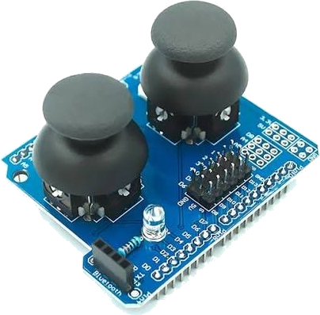
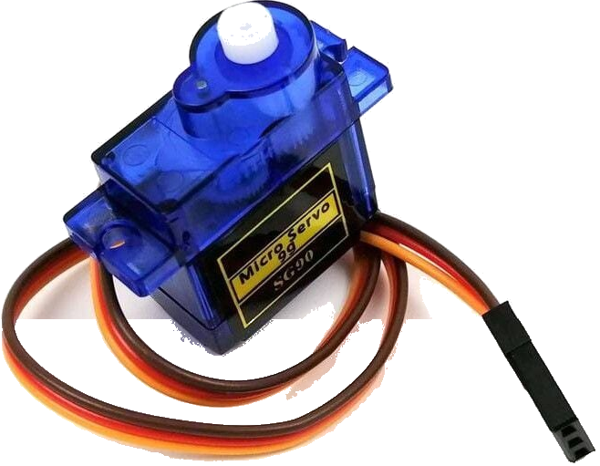

Componentes
Três peças eletrônicas explicam quase todo o comportamento do braço. As fotos abaixo são de referência dos modelos usados; o shield pode variar entre revisões — confira o silk e os canais antes de ligar.



Lista de materiais
BOM eletrônica e de fixação da revisão nov/2026. A mesma lista aparece no manual, Rev 2.3; se divergirem, vale esta página.
Eletrônica e atuadores
| Item | Especificação | Qtd | Função |
|---|---|---|---|
| Servo SG90 / MG90S | 1,8–2,2 kg·cm · 4,8–6 V · nylon ou metal | 4 | Base, ombro, cotovelo e garra |
| Arduino Uno R3 | ATmega328P · 16 MHz · USB | 1 | Controle e PWM |
| Shield joystick duplo | meARM.WDT V2.10 · 2 joysticks + barramento de 4 servos | 1 | Controle manual |
| Fonte 5 V / 5 A | 5,0 V · 5,0 A contínuos + capacitor 1000 µF / 16 V | 1 | Alimentação dos servos |
| Cabo USB A–B | Comunicação e upload | 1 | Gravação do firmware |
Fixadores M3
| Fixador | Tipo | Qtd | Aplicação |
|---|---|---|---|
| M3 × 30 mm | Allen DIN 912 | 4 | Torres 09/11 e espaçador 14 |
| M3 × 16 mm | Allen DIN 912 | 5 | Ombro, cotovelo e balancim 10 |
| M3 × 12 mm | Abaulada ISO 7380 | 12 | Tirantes e travessas da base |
| M3 × 10 mm | Abaulada ISO 7380 | 8 | Berço Yaw, mesa 12 e cruzetas |
| M3 × 8 mm | Abaulada ISO 7380 | 6 | Garra, guia 27 e biela 28 |
| Porca Nyloc M3 | DIN 985 | 15 | Articulações móveis |
| Porca sextavada M3 | DIN 934 | 16 | Alojamentos estáticos |
| Espaçador M3 × 24 mm | Latão ou inox | 4 | Base e servo Yaw |
| Arruela de nylon M3 | 0,5 mm · Ø 7 mm | 16 | Juntas PLA–PLA |
| Arruela lisa M3 + M2 | DIN 125 + kit horn | 24 | Assento e fixação dos servos |
Impressão e bancada
- PLA preto Bambu PLA Basic Preto (#22262C), 1,75 mm — ~102 g para as 29 peças.
- TPU 95A opcional para os 4 pés (~4 g).
- Chave Allen 2,0 / 2,5 mm com ponta esférica.
- Graxa de silicone com PTFE — uma gota nos dentes da garra e na pista da mesa.
Pinagem
Valores do firmware 1.3.4. A montagem usa o servo em 90° (garra em 0°); a Posição 0 é a pose de repouso salva na EEPROM e pode ser ajustada depois.
| Junta | Pino Arduino | Posição 0 | Faixa | Observação |
|---|---|---|---|---|
| Base (Yaw) | D11 | 90° | 12–168° | Limites salvos na EEPROM |
| Ombro | D10 | 60° | 0–180°* | Ajuste ao curso mecânico |
| Cotovelo | D9 | 45° | 0–180°* | Espelhado em D3/D7/D8/D12 |
| Garra | D5 | 35° (fechada) | 0–90° | Não usar D6 nesta revisão |
* Faixa de software; o curso real depende da montagem. A base tem limite lateral anti-parafuso, salvo com D4 (2 s).
Joysticks, botões e LED
| Entrada | Pino | Função |
|---|---|---|
| Joystick esquerdo X | A0 | Base (esquerda/direita) |
| Joystick esquerdo Y | A1 | Cotovelo (cima/baixo) |
| Joystick direito X | A3 | Garra (fecha/abre) |
| Joystick direito Y | A2 | Ombro (cima/baixo) |
| Botão esquerdo | D2 | Clique: Posição 0 · 2 s: salvar Posição 0 |
| Botão direito | D4 | Clique: trava a garra · 2 s: salvar limite da base |
| LED de status | D13 | Estado e diagnóstico |
Energia
O app mostra boots=N no diagnóstico. Se esse número mudar enquanto o braço se move, a placa reiniciou: é alimentação, não o servo. O firmware também registra o contador em .noinit.
# testar a serial sem o app (Linux)
stty -F /dev/ttyACM0 115200 raw -echo
printf '#B\n' > /dev/ttyACM0 && cat /dev/ttyACM0Botões
- D2 · clique: vai suavemente para a Posição 0 salva.
- D2 · segurar 2 s: salva a pose atual como nova Posição 0 (EEPROM).
- D4 · clique: trava/libera a pressão da garra; travada, ela só aperta.
- D4 · segurar 2 s: salva o limite lateral da base no ângulo atual.
- Monitor serial:
hajuda,sstatus,rretorna à Posição 0,lrestaura os limites amplos da base,[/]salvam mínimo/máximo.
Calibração
- Monte o Servo 1 em 90° com a mesa alinhada para a frente; feche o Yaw.
- Monte os Servos 2 e 3 em 90° e encaixe as bielas 22/23.
- Monte o Servo 4 em 0° (pinça fechada) e encaixe H1/H2.
- Ligue com a fonte externa e deixe o firmware assumir; use D2 para ir à Posição 0.
- Ajuste a pose de repouso e segure D2 por 2 s para salvar. Confira os limites da base com D4 (2 s).
- No app, use Assumir controle (PC) e mova uma junta por vez; o joystick físico fica travado.
Limites e segurança
- Base: 12–168° por padrão; ajuste ao curso real e salve o limite lateral.
- Ombro e cotovelo: 0–180° no software; o curso mecânico é menor. Ajuste antes de soltar o braço.
- Garra: 0–90°; a trava D4 impede a abertura sob carga.
- Nunca force uma articulação com os servos energizados — o esforço reverso danifica as engrenagens do SG90.
- O firmware continua dono do movimento: o app só propõe alvos. Se o USB cair, o watchdog de 500 ms segura a pose e devolve o controle ao joystick.
Checklist de bancada
- 4 servos nos canais corretos (D11, D10, D9, D5) e GND comum.
- Fonte 5 V / 5 A ligada; USB só para lógica e upload.
- Servo 1 em 90°, Servos 2/3 em 90°, Servo 4 em 0°.
- H1/H2 montados e pinça fechada; peça 26 fora do projeto.
- Nenhuma Nyloc prensando o PLA; juntas giram à mão.
- Cabos passando por dentro da peça 14, sem prender no Yaw.
boots=Nestável durante o movimento.